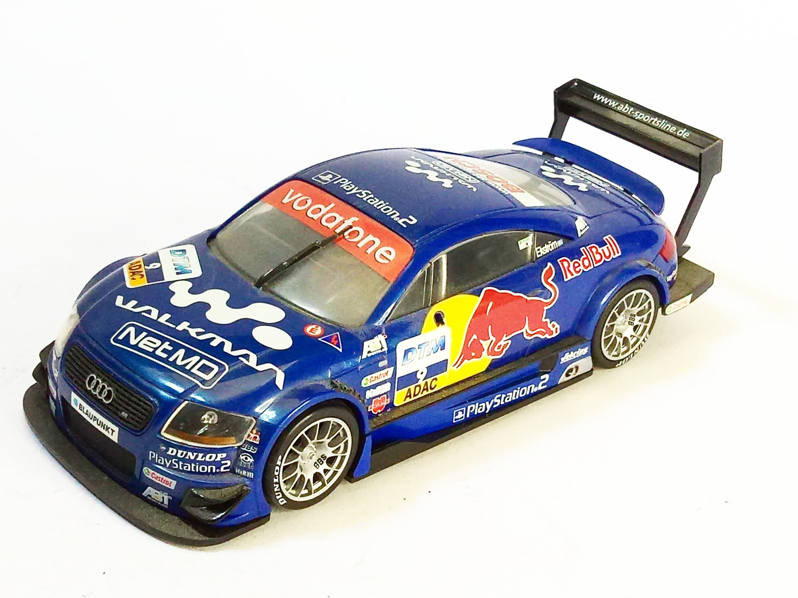
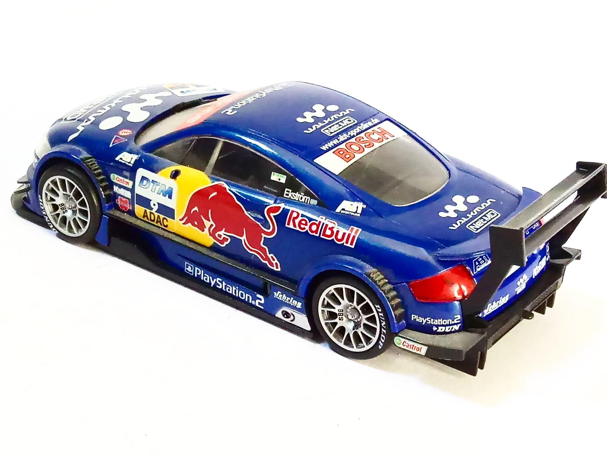

Auto e veicoli stradali · scale model archive
AUDI TT-R DTM
AUDI TT-R DTM — Kit: Revell, Scale: 1/32. DTM 2002 Playstation2 (no3 Laurent Aiello) #1/32 #Revell

Photo gallery

English description
DTM 2002 Playstation2 (no3 Laurent Aiello)
#1/32 #Revell
Descrizione italiana
DTM 2002 Playstation2 (no3 Laurent Aiello).